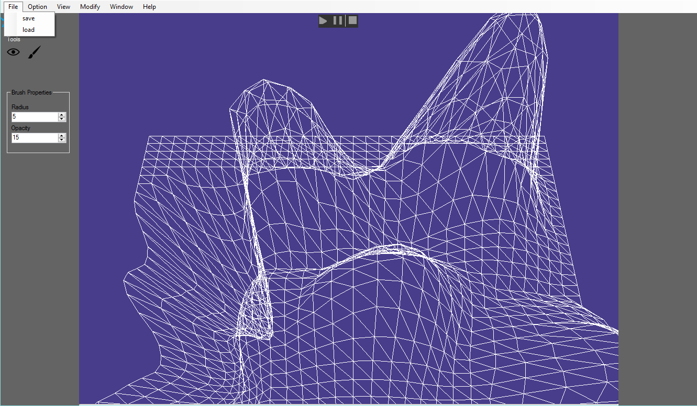

AXIS ENGINE
Description
I started this project in 2013 when I wanted to learn C++. At first, I followed a tutorial on www.rastertek.com and I became very interested in game engines. I continued the tutorial project by adding more game elements such as the collision of advanced audio. J'ai parti ce projet en 2013 lorsque je voulais découvrir le langage C++. J'ai d'abord suivi le tutoriel du site web www.rastertek.com et je me suis beaucoup m'intéressé aux moteurs de jeu. J'ai continué le tutoriel en y ajoutant des éléments de jeux comme la collision et de l'audio plus avancé.
A year later, with more experience with programming, I completely rebuilt the game engine to use less inheritance and to use more design patterns. In 2015, after building the majority of architecture, I focused on C# user interface, adding more elements described below: Un an plus tard, ayant plus d'expérience avec la programmation, j'ai reconstruit complètement le moteur de jeu afin de moins utiliser d'héritage et d'utiliser plus de patrons de conception. En 2015, après avoir construit la majorité de l'architecture, je me suis concentré sur l'interface en C#, en y ajoutant plusieurs éléments décrits ci-dessous.
Interface options Options de l'interface

- Scene creation Création d'une scène
- Terrain creation Création d'un terrain
- Terrain modification Modification du terrain
- Modification tool options Propriétés de l'outil de modification
- Import 3D model Importation de modèles 3D
- Play the game inside the interface Démarrer le jeu dans l'interface
- Camera control Contrôle d'une caméra
Technology and architecture Technologies et architecture
The primary purpose of my game engine is to allow the addition of new tools as quickly as possible, so I spent more time on the basis of the architecture to enable easy and clean change throughout the development. Of course, I had to use several design patterns, inheritance and preprocessor directives. The following list shows examples of these implementations: Le but premier de mon moteur de jeu est de permettre l'ajout de nouveaux outils le plus rapidement possible. J'ai alors passé beaucoup de temps sur la base de l'architecture afin de permettre des modifications faciles et de garder le code propre tout au long du développement. Bien évidemment, j'ai dû utiliser plusieurs patrons de conception, de l'héritage et des directives de préprocesseur pour la gestion des plateformes. Voici une liste qui montre des exemples de ces implémentations:
- Command design pattern - Input modification Patron de conception commande - Modification des contrôles
- Observer design pattern - Bonus collection Patron de conception observateur - Collection d'un bonus
- Factory design pattern - Game object creation Patron de conception fabrique - Création des objets de la scène
- Composite design pattern - Allow an object to contain an other object Patron de conception composite - Permettre qu'un objet contienne d'autres objets
- Facade design pattern - Music playing Patron de conception façade - Utilisation de la musique
Since the beginning of the development of my engine, I used several different technologies which I replaced because they were no longer supported with DirectX SDK and DirectSound. The technologies that I now use in my game engine are: Depuis le début du développement de mon engin, j'ai utilisé plusieurs technologies différentes que j'ai remplacées car elles n'étaient plus supportées dont DirectX SDK et DirectSound. Les technologies que j'utilise dans mon moteur de jeux sont maintenant:
- Windows SDK
- DirectInput
- XInput
- XAudio2
- Windows Form
Screenshot Capture d'écran
